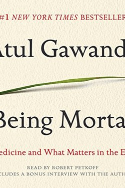

Why Did Purdue Pharma Fail?
The Painkiller That Became a National Emergency
📜 What Happened
Purdue Pharma launched OxyContin in 1996 with a claim its own executives knew was false: that the 12-hour pill was less addictive than other opioids. Sales reps were told to say the addiction rate was under 1%, and marketing targeted doctors with dining, trips and scripts. Sales hit $2.8B by 2001; addiction and overdose deaths climbed with them. In 2007, Purdue and three executives pleaded guilty to misbranding and paid $634M. When states sued en masse, the company filed for bankruptcy in 2019; in 2020 it pleaded guilty again — this time $8.3B — and the Sackler family agreed to pay billions more. By then the opioid crisis had killed more than 200,000 Americans and was still counting.
☠️ The Fatal Mistake
Designing a prescription as a profit machine — the product's success metric was refills, not relief, and the marketing was engineered around a false safety claim.
🧠 The Lesson (Free for You)
When the business model depends on the patient's dependence, the honest conversation about trade-offs never happens. Purdue's lesson: in any field where you hold power over someone's wellbeing — medicine, finance, education — the line between help and extraction is drawn by what you measure. Measure refills, and you will get refills.
📕 The Antidote Book

Gawande, a surgeon, confronts the taboo: medicine has become so good at prolonging life that it forgets to help people live before they die. Nursing h…
📖 OPEN THE FULL INTERACTIVE BREAKDOWN →Searchable, filterable, free to read — they paid billions; your lesson is free.